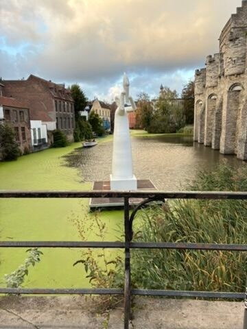
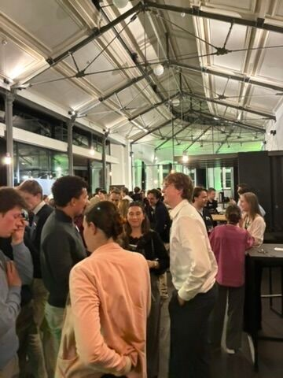
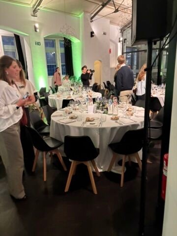
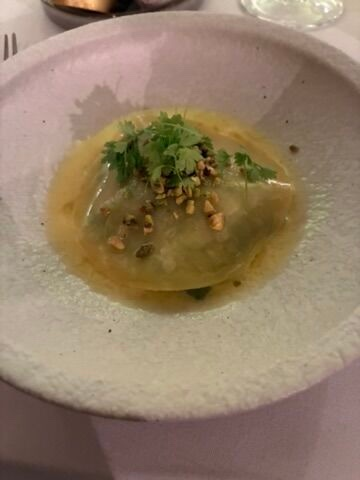

On Tuesday 13 October 2026 I attended an exclusive networking event hosted by Deloitte at the historic Oude Vismijn in Ghent. It turned into one of those evenings that stays with you for a while.
A historic location
The Oude Vismijn is Ghent's old fish market, right by the water and in the shadow of the Gravensteen castle. Inside, the old hall with its steel roof and big windows made for a great place to bring people together. Walking there along the canal already put me in a good mood.


Culture from the inside
The evening was a chance to discover Deloitte's company culture from the inside, instead of from a careers page. I met talented students and professionals from all kinds of industries, which made the conversations varied: everyone looked at things from a slightly different angle.
Four courses, a lot of conversations
The heart of the evening was a four-course dinner. Between the courses there was plenty of time to share ideas and talk about studies, careers and everything in between. A long dinner turns out to be a great format for networking: you get to know the people at your table properly instead of just exchanging names.


A special thank you to Casper Pot and Hanne Vermeire for sitting at our table and sharing so many valuable insights and so much career advice with us. Hearing how people at Deloitte got to where they are now is exactly the kind of perspective you don't get in a classroom.
The best career advice often comes over dinner, not over a slide deck.
Looking back
I left with new contacts, a better idea of what working at a company like Deloitte looks like, and some advice I'll definitely keep in mind as I head towards graduation. A big thank you to Deloitte for organising such a memorable and inspiring evening.